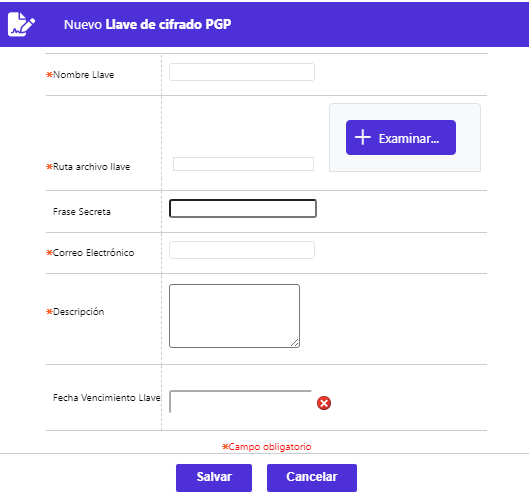
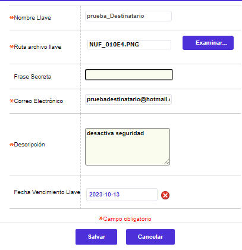
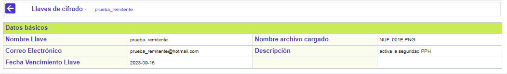

Parámetros Llaves de cifrado PGP
El proceso de encripción / desencripción de archivos cifrados con PGP (Pretty Good Privacy - Privacidad bastante buena), requiere que quien encripta, mediante el sistema operativo, genere un juego de archivos conocidos como llave pública y llave privada, los cuales son indispensables para la desencripción de los archivos que viajan cifrados. El aplicativo, a través de este formulario le permite a la entidad definir los datos esenciales para dicho propósito ya que parte de éstos sos utilizados en la asociación con las llaves de encripción.
El formulario contiene los enlaces Actualizar, Eliminar, Adicionar, Detalle y Descargar Llave.
Al activar el enlace Adicionar, el sistema despliega el siguiente formulario:

Descripción de campos
Nombre Llave |
Campo alfanumérico de 30 posiciones, obligatorio, en el que la entidad registra el nombre con el que va a identificar cada una de las llaves creadas para cifras y descifrar los archivos encriptados. |
| Ruta archivo llave | Campo no digitable que posee botón especial Examinar, mediante el cual permite navegar hasta encontrar el archivo de una llave pública específica, diferente al actualmente en uso. |
| Frase Secreta | Campo alfanumérico de 100 posiciones, obligatorio, en el que la entidad almacena la contraseña requerida para descifrar los archivos que llegan cifrados. |
| Correo Electrónico | Campo alfanumérico de 100 posiciones, obligatorio, en el que la entidad almacena, en formato de dirección electrónica, un nombre alternativo con el que pueden cifrarse los archivos. |
| Descripción | Campo alfanumérico de 40 posiciones, obligatorio, en el que debe registrarse una breve sintesis de la razón de ser de cada una de las llaves parametrizadas. |
| Fecha Vencimiento Llave | Campo que posee funcionalidad de calendario, esto es, se despliega un calendario mediante el cual se puede seleccionar la fecha hasta la cual, por políticas de seguridad, será válida la llave parametrizada y aunque si bien este campo puede ser nulo indicando que no expira, en caso de tener valor, los archivos que intenten ser desencriptados en un fecha posterior a la aquí indicada, el sistema no va a permitirlo. |
Actualizar: Si el usuario selecciona un registro e invoca la opciónActualizarse despliega un formulario en el cual el único campoNOmodificable es Nombre Llave.

Detalle: si el usuario selecciona un registro e invoca la opciónDetallese despliega un formulario con toda la información del registro y en el cual ninguno de sus campos es modificable.

Descargar Llave: si el usuario activa éste hipervínculo el sistema descarga, localmente, el archivo indicado en el campo Ruta archivo llave, arriba descrito.